Archaeopteryx
Chim Thủy Tổ kỷ Jura
Tổng quan
Kỷ
Jurassic
Họ
Archaeopterygidae
Chi
Archaeopteryx
Dài
50 cm
Nặng
1 kg
Thức ăn
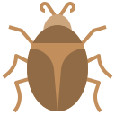
Archaeopteryx là một loài Khủng long bay tiêu biểu, được xem như là cỗ máy diệt mồi trên không trung lúc bấy giờ chính là Điểu long lông vũ, với hình dáng đặc biệt. Theo nhiều nhà khoa học, loài khủng long này chính là tổ tiên của nhiều loài chim hiện đại ngày nay.
Nguồn: wikipedia.org
Phân bố
Khu vực nước Đức
Thông tin thêm về Archaeopteryx
Kỷ nguyên
Theo niên đại của hóa thạch, các nhà nghiên cứu tin rằng Archaeopteryx sống cách đây khoảng 150.8 - 148.5 triệu năm trước trong thời kỳ Hậu kỷ Jura.
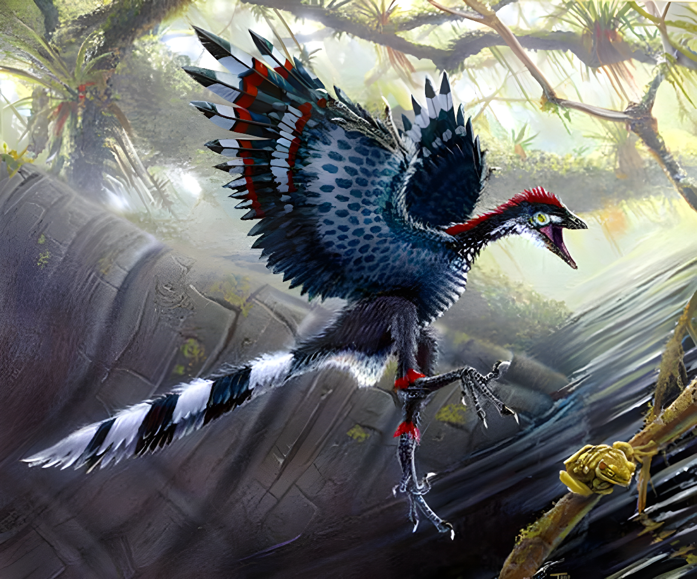Phân bố
Archaeopteryx sinh sống tại nơi ngày nay là miền nam Đức khi châu Âu còn là nhiều quần đảo trong vùng biển nông nhiệt đới, gần với đường xích đạo hơn hiện tại. Chúng sống trên cạn và bay lượn trên không để săn mồi.
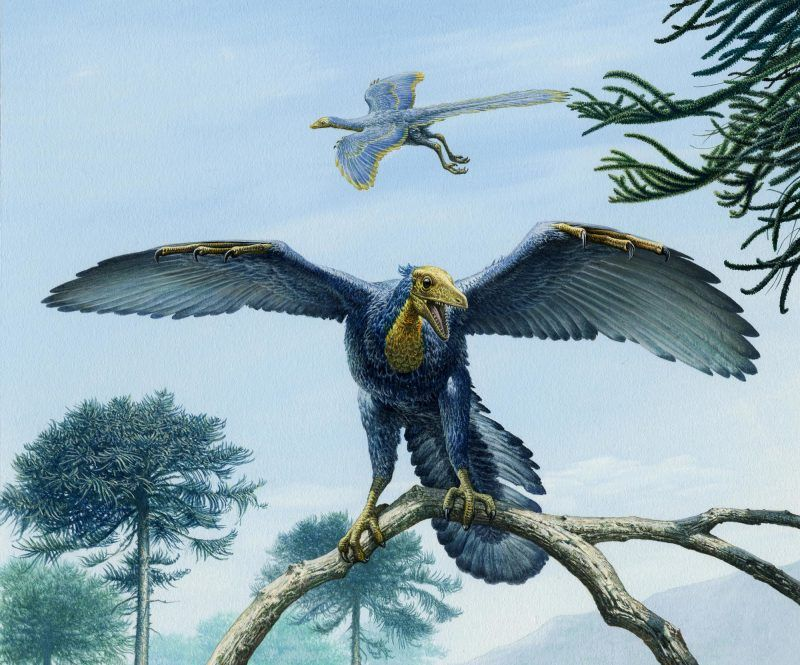Tên khoa học
Được đặt tên bởi nhà cổ sinh vật học Meyer vào năm 1878. Archaeopteryx lấy tên từ hai từ Hy Lạp: archaīos và ptéryx . Được dịch theo nghĩa đen, tên của nó có nghĩa là “cánh cổ”. Một số gọi loài chim cổ đại này bằng tên tiếng Đức của nó, Urvogel , có nghĩa là “con chim đầu tiên” hoặc “con chim nguyên bản”. Có thể cho rằng có hai loài trong chi này: A. lithographica và A. siemensii.
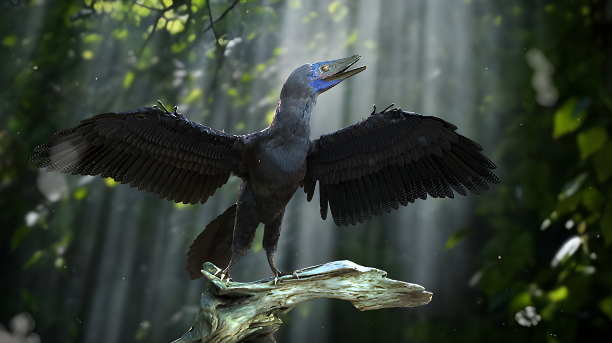Kích thước
Hầu hết những con chim Thủy Tổ này sẽ có kích thước nhỏ tương đương một con quạ hoặc gà điển hình. Chúng có chiều dài cơ thể khoảng 50 cm (20 inch) và nặng khoảng 1 kg (2 pound).
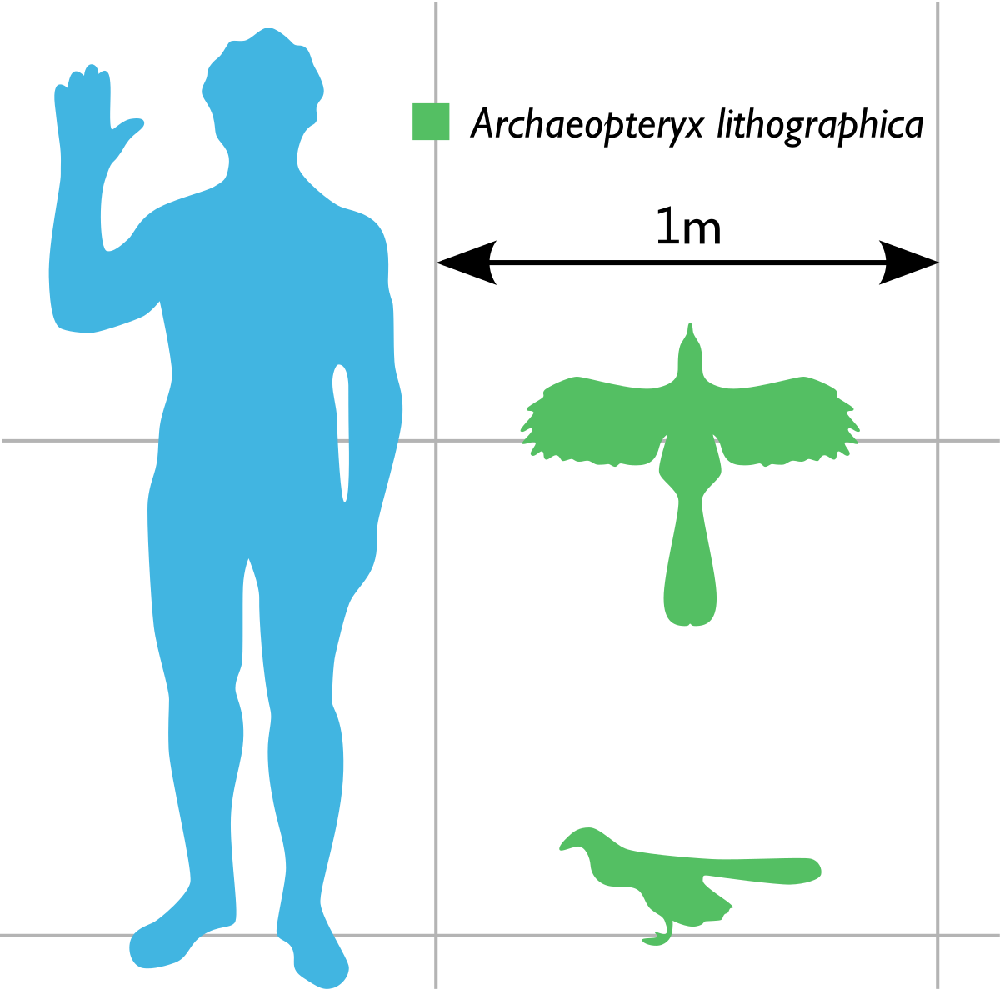Ngoại hình
Đừng để kích thước nhỏ bé của Archaeopteryx đánh lừa bạn bởi vì Archaeopteryx có nhiều đặc điểm của khủng long Đại Trung sinh hơn là chim. Chúng có miệng đầy răng sắc nhọn và đuôi dài, xương xẩu. Nó cũng có ba móng vuốt trên mỗi cánh tay. Đôi cánh gian rộng và được cho là có khả năng bay hoặc lướt.
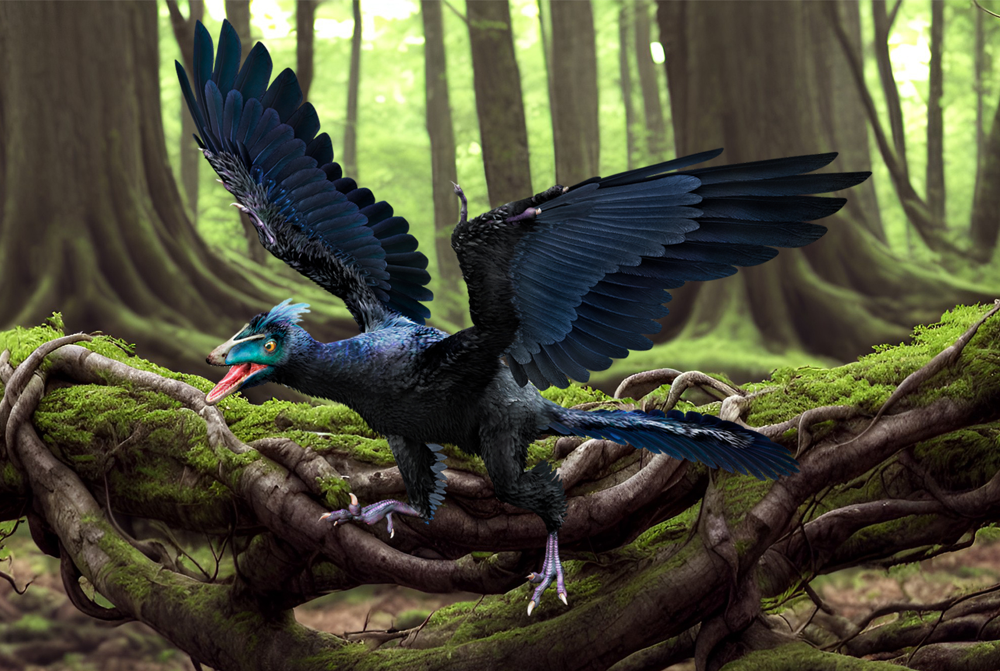Bằng cách sử dụng công nghệ tiên tiến như kính hiển vi điện tử quét và phân tích tia X phân tán năng lượng, các nhà nghiên cứu có thể phân tích các mẫu lông vũ và kết luận rằng Archaeopteryx rất có thể có màu đen hoặc xanh đen. Những đặc điểm này khiến Archaeopteryx được coi là hóa thạch chuyển tiếp giữa khủng long và chim.
Chế độ ăn và săn mồi
Ngay cả với một số mẫu vật được bảo quản tốt, chúng ta vẫn biết rất ít về những gì Archaeopteryx đã ăn. Theo đánh giá từ những chiếc răng nhỏ và sắc nhọn cùng với những chiếc móng vuốt trên hai cánh tay. Rất có thể nó dùng móng vuốt để tóm lấy con mồi hoặc có thể trèo cây và là một loài động vật ăn thịt. Vì vậy, nó có thể ăn các loài bò sát nhỏ, động vật có vú và côn trùng.
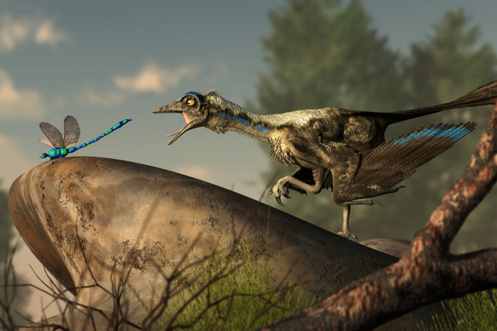Cũng có thể Archaeopteryx là loài ăn tạp giống như nhiều loài chim hiện đại. Vì vậy, nó cũng có thể đã ăn cả hạt, trái cây hoặc quả mọng trong chế độ ăn uống của mình.
Khám phá
Năm 1860, mẫu vật Archaeopteryx bị nghi ngờ đầu tiên được tìm thấy gần Solnhofen, Đức. Tuy nhiên, đó chỉ là một dấu lông vũ và không có bằng chứng nào xác nhận rằng đó thực sự là của con chim được đề cập.
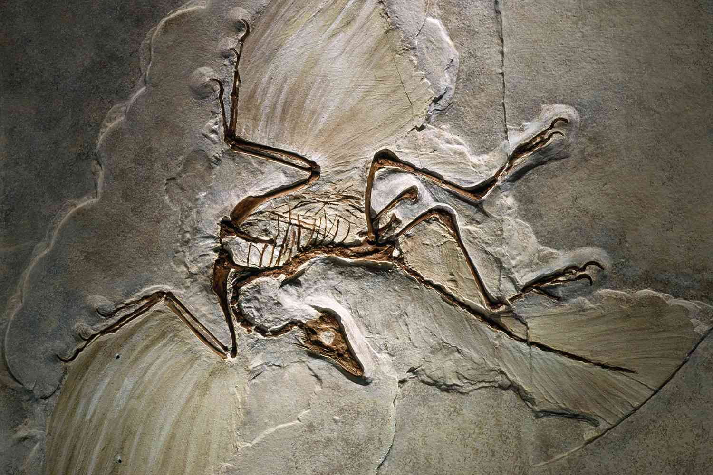Tuy nhiên, một bộ xương Archaeopteryx đã được tìm thấy một năm sau đó gần Langenaltheim, Đức. Mặc dù đã mất gần hết đầu và cổ nhưng rõ ràng đây là một chi mới. Lý do chính mà phát hiện này là một vấn đề lớn như vậy là nó dường như xác nhận nguồn gốc của lý thuyết loài của Darwin. Vào thời điểm đó, bộ xương này là bằng chứng về loài chim lâu đời nhất, là mối liên hệ giữa khủng long và chim.
Những sự thật thú vị
Điểu long lông vũ Archaeopteryx có thể bay được hay không và nếu có thể bay thì chúng bay theo cách nào? Theo nhiều nghiên cứu đã được thực hiện, cấu trúc xương của chúng gần như rỗng giống như các loài chim hiện đại, phần xương cánh của chúng có sự phát triển giống với hầu hết các loài chim hiện đại và phù hợp với việc đập cánh để bay những quãng ngắn hoặc bay bật lên. Điểu long lông vũ Archaeopteryx đã có sự tiến hóa để phù hợp với việc bay chủ động ngẫu nhiên với tốc độ bay nhỏ nhất của chim thủy tổ này là 7,6m/giây, có thể đập cánh bay, nhưng không được lâu.
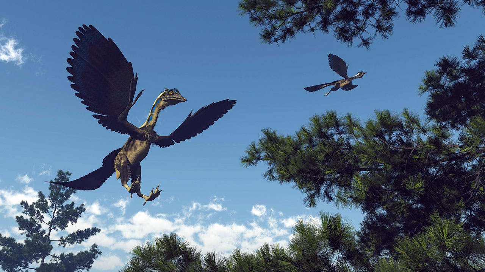Các mối đe dọa của Archaeopteryx: Vào cuối kỷ Trias , một sự kiện tuyệt chủng hàng loạt đã khiến hầu hết các loài động vật và thực vật bị xóa sổ khỏi Trái đất. Vì vậy, khi Archaeopteryx xuất hiện vào cuối Kỷ Jura , có khả năng sẽ không có nhiều kẻ săn mồi săn lùng chúng. Một mối đe dọa có thể xảy ra mà những con khủng long giống chim này có thể phải đối mặt là chết đuối. Bởi vì chúng không phải là những con chim bay khỏe, nên chúng có thể đã đâm xuống vùng biển xung quanh hòn đảo của mình và sẽ chết đuối nhanh chóng khi lông của chúng ướt sũng.
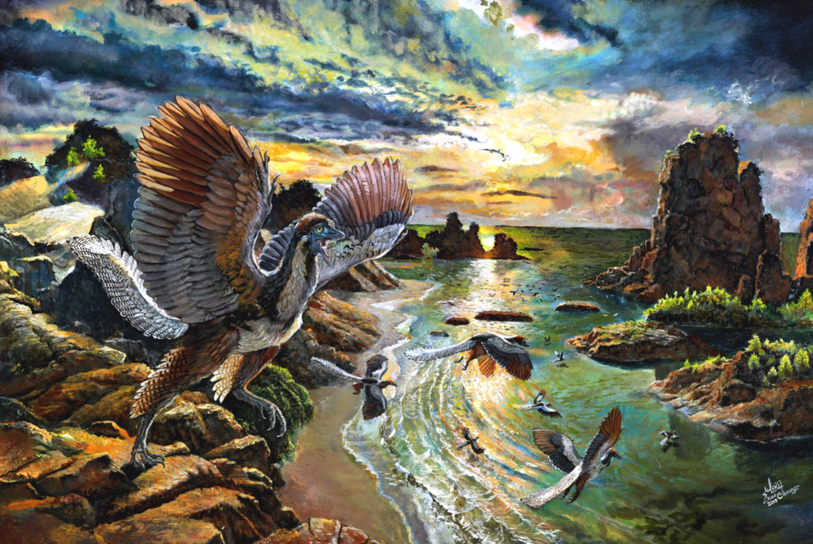